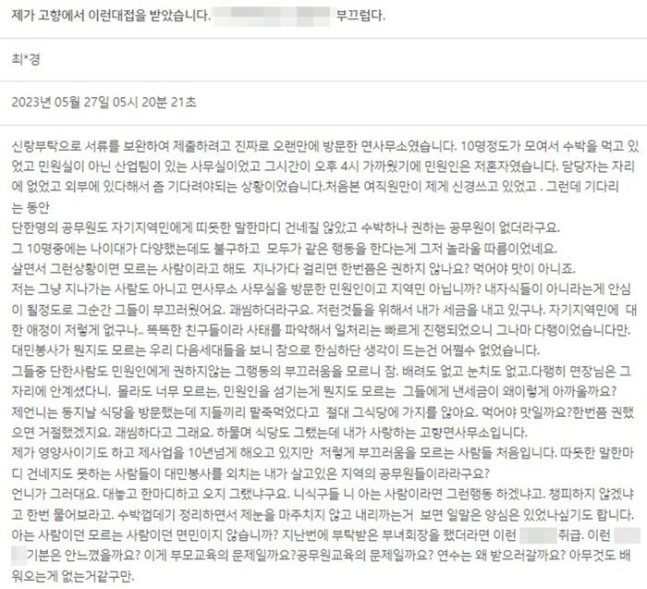

"수박 먹고 있던 공무원들, (나한테) 수박 하나 권하는 사람이 없더라"
최근 충남 서산의 한 면사무소를 찾은 시민이 공무원들끼리 수박을 먹을 뿐 자신에게는 권하지도 않았다면서 서산시청 홈페이지에 민원을 제기해 논란입니다.
서산시청 홈페이지에는 해당 민원을 비판하는 글과 함께 최초 민원인의 반박이 잇따르며 설전이 벌어졌습니다.
지난 27일 서산시청 홈페이지에는 '제가 고향에서 이런 대접을 받았습니다'라는 제목의 글이 올라왔습니다.
작성자 A 씨는 "오랜만에 방문한 면사무소였다. (공무원들) 10명 정도가 모여서 수박을 먹고 있었고 민원인은 나 혼자였다"라고 운을 뗐습니다.
이어 "단 한 명의 공무원도 따뜻한 말 한마디 건네지를 않았고 수박 하나 권하는 공무원이 없었다"면서 "내 자식들이 아니라는 게 안심이 될 정도로 그들이 부끄럽고 괘씸했다. 저런 것들을 위해 내가 세금을 내고 있구나"라고 말했습니다.
A 씨는 "똑똑한 친구들이라 사태를 파악해서 일 처리는 빠르게 진행됐으니 다행"이라면서도 "민원인을 섬기는 게 뭔지도 모르는 그들에게 낸 세금이 왜 이렇게 아까울까"라고 덧붙였습니다.
그러면서 "이게 부모 교육의 문제일까요? 공무원 교육의 문제일까요? 연수는 왜 받으러 갈까요? 아무것도 배워오는 게 없는 것 같구만"이라면서 글을 끝냈습니다.
